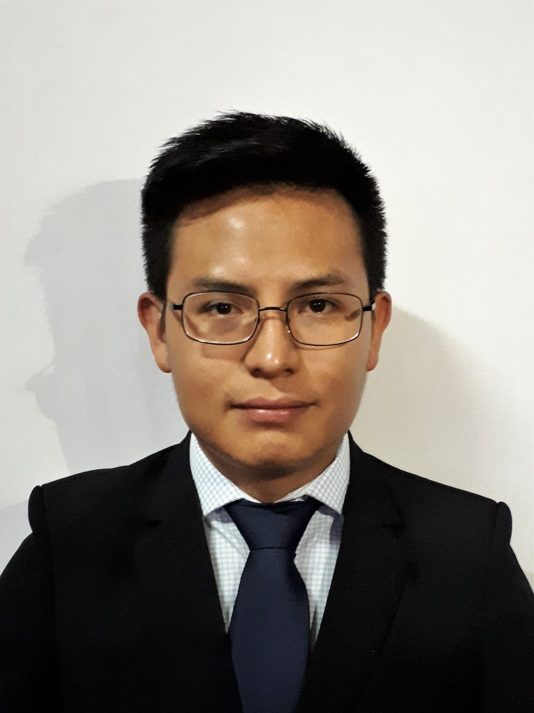

 Ludwin Cortez nació en Mixco, municipio de Guatemala; se gradua en el 2,013 de la carrera a nivel medio de perito contador, ese mismo año obtiene la oportunidad de trabajar en Hino de Guatemala como auxiliar contable.
Inicia su carrera universitaria de Contaduría Pública y Auditoria en 2,014, desde esta época ya se interesa por la programación, tiempo después retoma esté proyecto.
En el año 2,020 se graduá de la Universidad de San Carlos de Guatemala de CPA, en este mismo año toma el curso de Fundamentos de Programación con la finalidad de estudiar en la Universidad Mariano Gálvez la carrera de Ingeniería en Sistemas en 2,021.